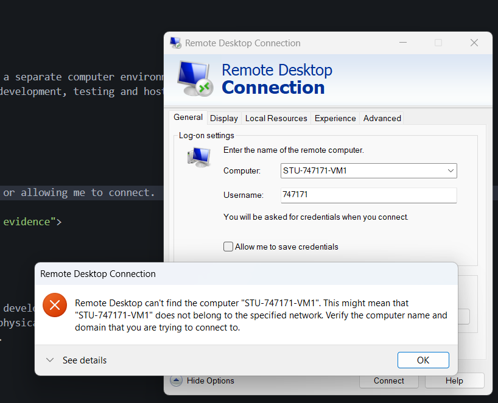

Virtual Networks and VM Deployment
Section 1: Lab Access Issue
This lab required access to VM1 and VM2 so that I could test whether the two virtual machines could communicate over the virtual network. I attempted to connect to my VM using Remote Desktop Connection, but the connection failed because Remote Desktop could not find the computer.
Because of this, I could not complete the live VM networking commands inside the virtual machines. However, I have documented the intended process and explained what each command would have tested.

Section 2: Testing IP Configuration
The first task would have been to log into VM1 and run ipconfig. This command displays network information for the machine, including the IPv4 address. The IPv4 address is needed so that one VM can communicate with another VM.
ipconfig
I would then have repeated the same command on VM2 and recorded both IPv4 addresses.
Section 3: Testing VM Communication with Ping
After finding the IPv4 address of VM2, I would have returned to VM1 and used the ping command to test whether VM1 could communicate with VM2 over the virtual network.
ping [VM2_IP_ADDRESS]
If the ping command returned replies, this would show that the two virtual machines could communicate with each other. If the request timed out, this would suggest a network or firewall issue.
Section 4: Testing IIS on Port 80
The next step would have been to test whether the IIS web server on VM2 was reachable over port 80. Port 80 is commonly used for normal HTTP web traffic.
Test-NetConnection [VM2_IP_ADDRESS] -port 80
If this command returned a successful TCP test, it would show that the web server was reachable over the network.
Section 5: Self-Hosted GitHub Runner
The later part of the lab involved setting up a self-hosted GitHub Actions runner on the VM. This would allow GitHub Actions to deploy the website directly to the VM rather than only to GitHub Pages.
Because the VM could not be accessed, I could not install or run the self-hosted runner. The intended process would have been to create a new Windows self-hosted runner in the GitHub repository settings, copy the setup commands into the VM terminal, and run the runner using the run.cmd command.
Settings → Actions → Runners → New self-hosted runner
./run.cmd
Reflection
This lab showed how virtual machines can be connected together on a virtual network and tested using commands such as ipconfig, ping and Test-NetConnection. These commands are useful because they help diagnose whether machines can communicate and whether a web server is reachable.
In industry, this is useful because cloud systems often involve multiple virtual machines or services communicating across private networks. Testing connectivity and automating deployment with runners can help make deployment more reliable and easier to manage.